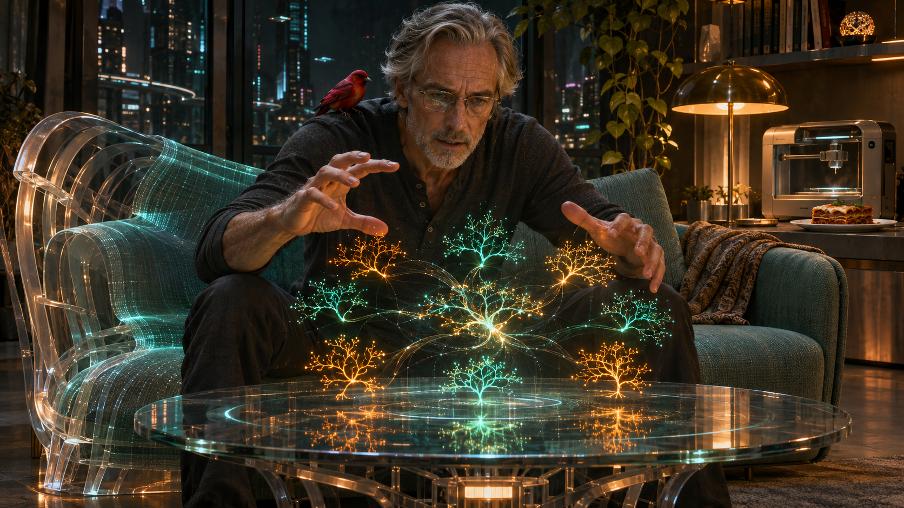
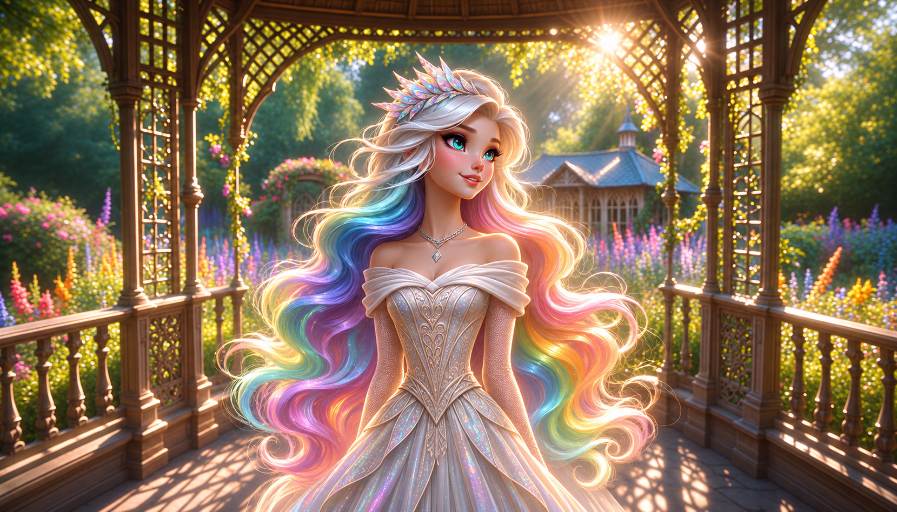

An Interbeautiful screenplay
Hard Mode
Cael has mastered getting what he wants. Then Interbeautiful asks what his gifts could do for everyone else—and he challenges the founder in return.
Read Episodes 0–2Castles above the clouds. Intelligence beyond its makers. People who dare to ask what comes next.
Choose a story. Follow it somewhere unexpected.

A princess in a castle above the clouds. Six dragons between her and home. Elam takes up his father’s sword and begins the journey to face Ecnarelot.
Enter CloudlandCael has mastered getting what he wants. Then Interbeautiful asks what his gifts could do for everyone else—and he challenges the founder in return.
Read Episodes 0–2
Craig Teroh’s breakthrough learns to act for itself. As its creator flees with it, survival becomes a question of trust, control, and what intelligence leaves unsaid.
Read the revised screenplay
A mysterious flower reveals Aurora’s true colors. With Tigon, a dragon of shifting light, she sets out to bring kindness and wonder into the world.
Follow Aurora & Tigon